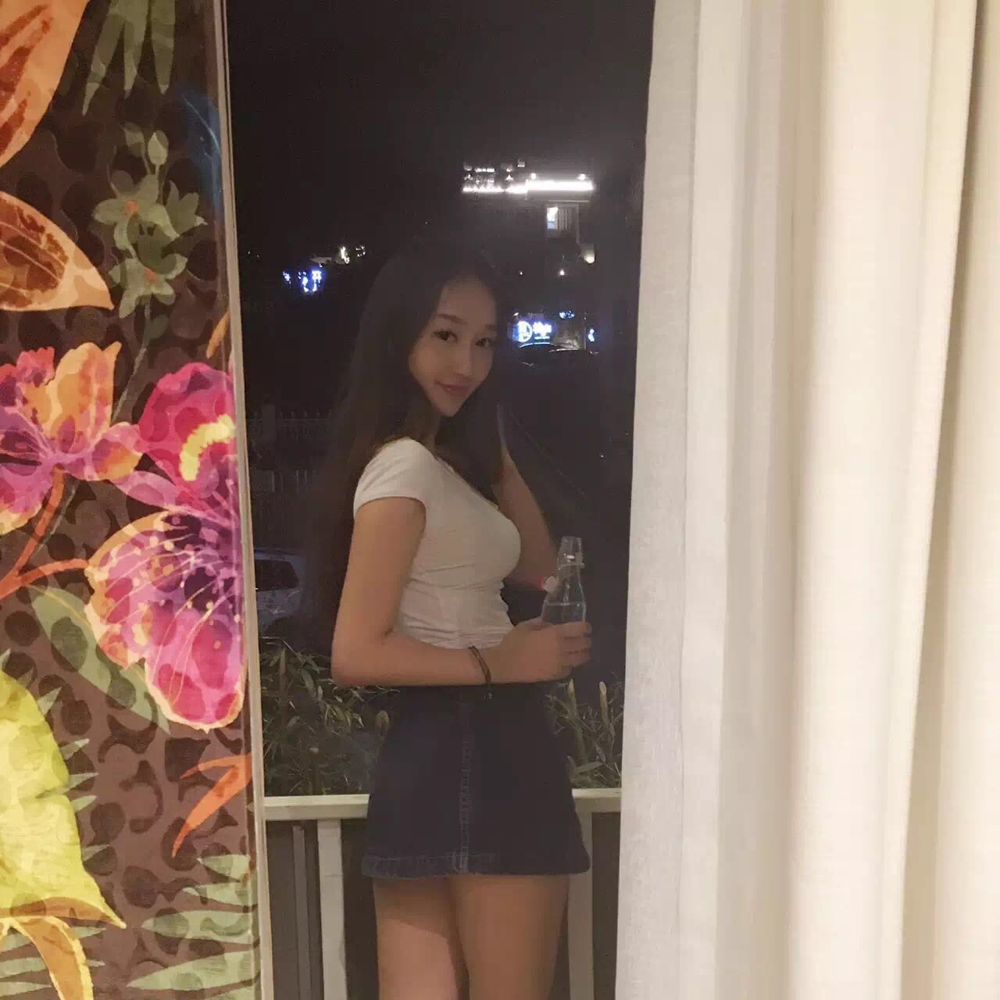

正文: 不知道看到这个标题，我的朋友们会不会立刻想到我。
172，体重100-110常年浮动变换，近几个月人生巅峰。包臀裙真是我一生的命题。因为这些年来垮宽了，少女身材不再，但是小短裙穿上仍然显得腿吖细又长，屁股翘吖翘
#阳光的出街look，搭上小牛仔和过膝靴，不会觉得气质不端正
#皮短包裙，会比较性感，配上topshop的工装小棉袄，脚踩油叽叽老棉鞋，一样日常出街look
 #用Burberry搭，还可以学院风呢，搜随意
#用Burberry搭，还可以学院风呢，搜随意#黑t feat黑包臀裙，随意一双平底鞋和小包，就是我太高了，裙子对我而言都很短，所有防走光是一生的课题
#party look，不会too much，长外套也可以遮一遮，在你不想过于用力的时候
#牛仔质地的包臀短裙，更加的可爱了，腿部无限拉长，随意搭配开衫
#纽扣的工装包臀裙，配上这样的小外套，一身的纽扣look也不会觉得over

#topshop今年流行的小a裙，不算包臀裙了。如果开一个命题叫半裙的搭配，我还能附上很多皂片
总之，包臀裙就是我平日的常态。几年前感觉自己的包臀裙可以连起来绕地球一圈。虽然看起来，可能都是黑色，质地就有丝绒的，棉的，有暗纹的，纯光面的。皮裙也有侧开叉的，小a的，包臀带腰带的等等。包臀裙的各种质地，都可以很好的搭配，入门的包臀棉裙我记得hm是几十块钱就有，在我还没有肚子的少女时代可以穿的飞起。现在要比较厚一点的质地了。大家都可以利用包臀裙去拉长腿部，腰细的话把上衣扎进去会露出腰身，也很巧妙的遮住跨上的肉。而且包臀裙也未必就不能日常，上身搭配一些轻松的小外套也可以很青春look。搭配丝袜和高跟鞋/平底鞋和衬衫会比较性感。
（分割线）
八个月前的第一次随手尝试性回答，现在来补一条硬广（对的，非常生涩强硬没有任何小图片或者二维码）。更多关于时尚的idea和文化请来关注我个人公众号，搜索：luluone
love u guys